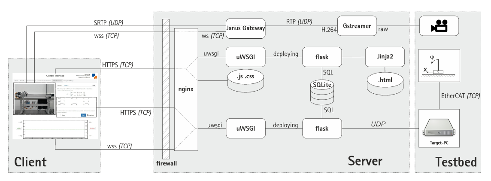

https://github.com/OneScreenfulOfPython/booking-system
https://github.com/chuangag/room-booking-app
http://www.developerdrive.com/2015/06/how-to-build-a-simple-reservation-system/
https://codereview.stackexchange.com/questions/49786/doctor-patient-reservation-scheduling
https://github.com/hieusydo/Airline-Reservation-System
控制硬體
http://laris.univ-angers.fr/_resources/IFAC2017/IFAC_Paper_4212.pdf (local pdf)
